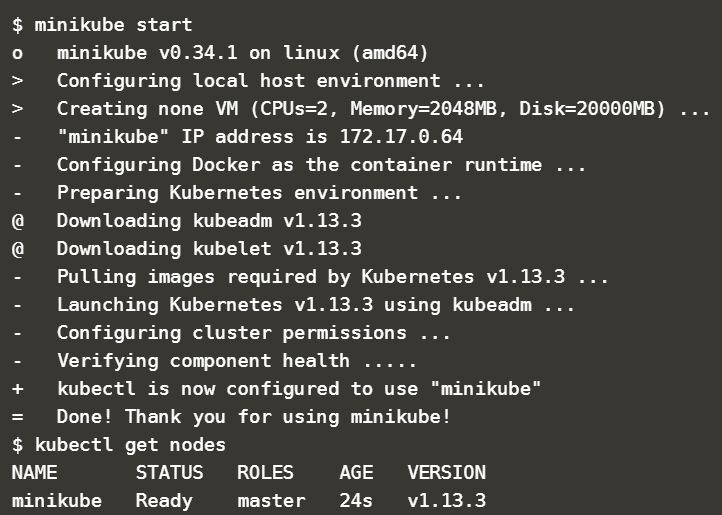
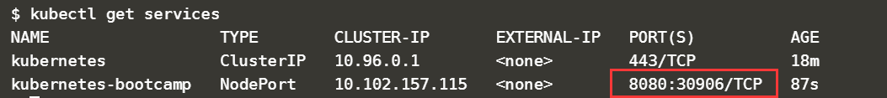
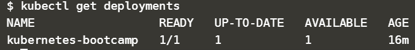
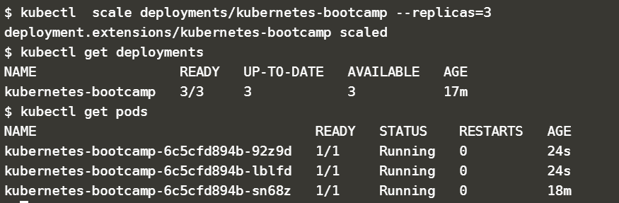

kubernetes：https://kubernetes.io/docs/tutorials/kubernetes-basics/
创建单节点的kubernetes集群
minikube start
kubectl get nodes

集群唯一的节点为minikube，当前执行命令的地方并不是minikube，而是通过k8s的命令行工具kubectl远程管理集群
查看集群信息
kubectl cluster-info
部署
kubectl run kubernetes-bootcamp \
> --image=docker.io/jocatalin/kubernetes-bootcamp:v1 \
> --port=8080
Deployment：应用
Pod:容器的集合,k8s最小的调度单位，同一个pod中的容器始终被一起调度。通常将紧密相关的一组容器放到一个Pod中，同一个Pod中所有容器共享IP地址和Port空间，也就是说它们处于同一个network namespace中.
kubectl get pods:查看当前的Pod
访问应用
默认情况所有Pod只能在集群内访问。
为了从外部访问，需要将容器8080端口映射到节点端口
$ kubectl expose deployment/kubernetes-bootcamp \
> --type="NodePort" \
> --port 8080
service/kubernetes-bootcamp exposed
执行命令kubectl get services查看应用被映射到节点的哪个端口
kubectl get services

$ curl minikube:30906
Hello Kubernetes bootcamp! | Running on: kubernetes-bootcamp-6c5cfd894b-sn68z | v=1
Scale应用
默认情况下应用只会运行一个副本，可以通过kubectl get deployments查看副本数

增加副本
kubectl scale deployments/kubernetes-bootcamp --replicas=3

通过kubectl get pods，发现pod也增加到3个
通过curl访问应用，可以看到每次请求发送到不同的Pod,3个副本轮询处理，这样就实现了负载均衡
scale down，删除副本
kubectl scale deployments/kubernetes-bootcamp --replicas=2
其中一个副本被删除
滚动更新
升级
将当前v1版本的应用更新为V2
kubectl set image deployments/kubernetes-bootcamp kubernetes-bootcamp=jocatalin/kubernetes-bootcamp:v2
通过kubectl get pods可以观察滚动更新的过程，v1的Pod被逐个停掉且删除，同时启动新的v2Pod
回退
kubectl rollout undo deployments/kubernetes-bootcamp
（待续）本地搭建配置minikubernetes集群
minikube start --vm-driver=virtualbox --registry-mirror=https://registry.docker-cn.com
下载virtualbox：https://www.virtualbox.org/wiki/Linux_Downloads
rpm -ivh VirtualBox-6.0-6.0.8_130520_el7-1.x86_64.rpm
#出现缺失依赖
yum list available | grep 依赖
yum install -y SDL
yum install qt
yum install qt-x11
yum list available | grep opus
yum install -y libXmu.x86_64
yum install -y libXt.x86_64
yum install -y libvpx.x86_64